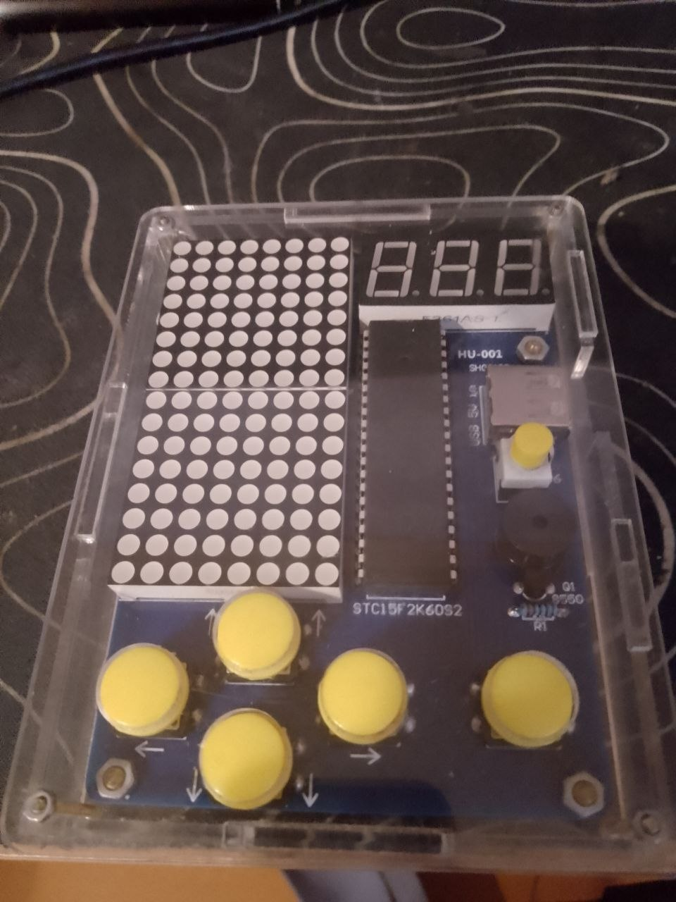

Забудьте про складні ігри з безкінечними оновленнями. Справжній кайф — це рядок, що зникає в самий відповідальний момент, і швидкість, що зростає до небес.
Цей **DIY Тетріс** побудований на базі потужного мікроконтролера STM32 та яскравої світлодіодної матриці. Ми помістили класику в стильний прозорий акриловий корпус, щоб ви могли бачити серце девайса, яке змушує фігури падати точно туди, куди ви хочете (ну, майже завжди).
Чому він крутий:
• Це реальне залізо в ваших руках, а не пікселі на смартфоні.
• Акриловий корпус захищає електроніку та надає пристрою вигляду справжнього інженерного прототипу.
• Легендарний геймплей у компактному форматі.
20 GOTO "GAME_OVER":
Це ідеальний девайс, щоб "залипнути" на перерві, здивувати друзів або просто отримати порцію дофаміну, складаючи цеглинки. Проста естетика, надійний контролер і нічого зайвого. **Твій персональний рівень майстерності чекає на перевірку.**
